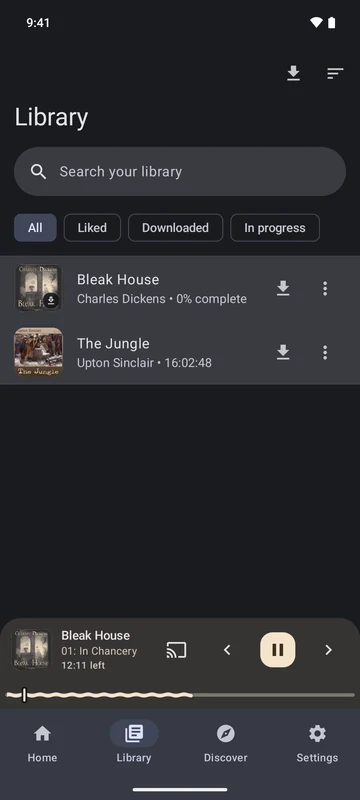

Z myślą o audiobookach
Słuchaj po swojemu.
Znajdź coś wartego usłyszenia. Wpleć opowieść w swój dzień. Zachowaj chwile, do których chcesz wracać.
Przedstawione funkcje są dostępne w wydaniu na Androida. Natywna aplikacja na iOS jest w przygotowaniu.
01 / Odkrywanie
Biblioteka możliwości.
Zacznij od polecanych książek lub poszukaj dawnego ulubieńca. Wybierz zbiory i języki, które Cię interesują.
- Szukaj książek i autorów. W LibriVox możesz też szukać rozdziałów i lektorów.
- Wybierz swoje zbiory. Odkrywaj LibriVox, Lit2Go i Wolne Lektury. Poznaj zbiory.
- Poznaj książkę. Na stronie książki znajdziesz opis, rozdziały i linki do oryginalnego źródła.

02 / Słuchanie
Zostań z opowieścią.
Okładka, rozdział i Twoje miejsce w książce. Sterowanie jest zawsze pod ręką, więc drobna zmiana nie przerywa dobrej historii.
- Znajdź swoje tempo. Zmieniaj prędkość odtwarzania i przewijaj do przodu lub do tyłu.
- Zasypiaj przy książce. Wyłącznik czasowy zatrzyma odtwarzanie po wybranym czasie.
- Słuchaj dalej w tle. Korzystaj z systemowego sterowania odtwarzaniem Androida, przechodząc między aplikacjami.

03 / Twoja biblioteka
Wróć do opowieści.
Niektóre książki wystarczą na popołudnie. Inne zostają z Tobą na tygodnie. Z biblioteki łatwo do nich wrócisz.
- Zapisz książkę na później. Stwórz własny zbiór opowieści, których chcesz posłuchać.
- Zapamiętaj chwilę. Dodawaj zakładki z notatkami i wracaj do wybranego fragmentu.
- Zachowaj postęp. Biblioteka i dane słuchania pozostają na Twoim urządzeniu. Bez konta.

04 / Gdziekolwiek słuchasz
Zabierz książkę ze sobą.
Bez internetu w podróży lub z głośnikiem w domu. Zabierz kolejny rozdział ze sobą.
- Pobierz na drogę. Zapisz rozdziały, gdy masz połączenie, i odtwarzaj je później offline.
- Słuchaj na głośniku. Przesyłaj dźwięk na zgodne głośniki i telewizory Google Cast w swojej sieci lokalnej.

Łączy nas miłość do książek
Słuchaj za darmo.
Otwarty kod.
Dobre historie zasługują na to, by je usłyszeć. LibriVox Mobile to darmowa aplikacja z otwartym kodem, oparta na nagraniach i książkach z publicznych zbiorów.
- Bez reklam
- Bez abonamentu
- Bez zakładania konta
- Kod na licencji MIT
Poznaj zbiory, z których pochodzą opowieści
Wolontariusze LibriVox ożywiają książki swoim głosem. W aplikacji możesz też włączyć Lit2Go i Wolne Lektury. Project Gutenberg udostępnia powiązane teksty. Nagrania, teksty i ilustracje podlegają warunkom swoich źródeł, a status domeny publicznej zależy od kraju.
Poznaj zbiory